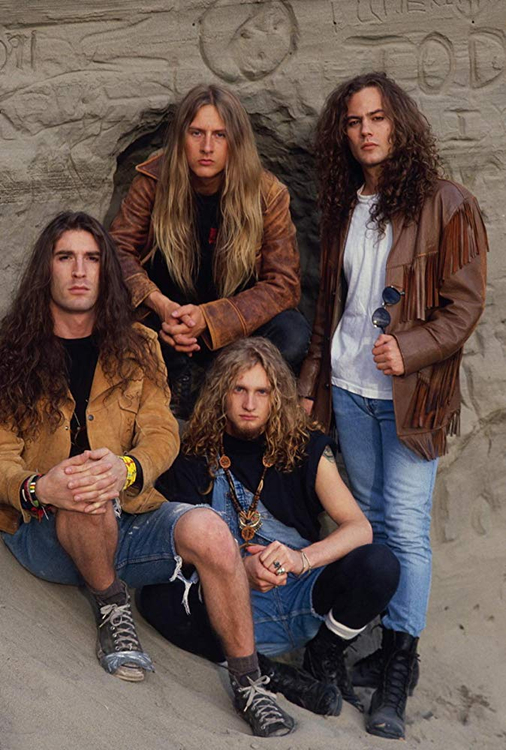

Formada nos EUA em 1987 por Jerry Cantrell (guitarra/vocal), Layne Staley (vocal), Mike Inez (baixo) e Sean Kinney (bateria). Pioneiros do grunge, misturando metal pesado com influências de doom e hard rock, destacando-se em álbuns como Dirt.
 voltar